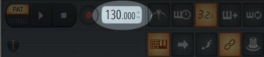
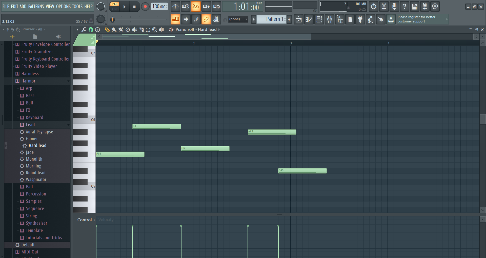

1
Pour commencer, nous pouvons voir sur l'interface du logiciel différents boutons, réalisant différentes actions.
La première chose à faire lorsqu'on commence un nouveau morceau, est de paramétrer la vitesse de ce dernier.
On appelle ça le
"BPM", soit "Battement Par Minute", le plus utilisé étant
128 pour les musiques edm et
100 pour le rap.
Ainsi, on peut le configurer on augmentant la valeur située dans l'encadré au dessus, il est par défaut de 130.

A noter: Plus la valeur est élevée, plus la musique sera "rapide".
2
Maintenant que la vitesse est réglée, nous pouvons commencer à composer.
Pour ce faire, nous avons à disposition sur la gauche du logiciel de nombreux instruments/synthés...
Ainsi, rendez-vous dans l'onglet "Plugin presets", puis dans "Generator".
A présent, vous êtes arrivé devant plusieurs dossiers, qui contiennent des instruments. Choisissez-en un, et glissez le dans le "Pattern" (bouton situé en haut)
Voir: la vidéo.
3
A présent, maintenant que vous avez choisi un instrument, vous pouvez faire un clique gauche dessus,et accéder à "piano roll".
Vous allez être redirigé vers une fenêtre, qui correspond simplement à une feuille de travail. En effet, vous pouvez dessiner des notes, plus ou moins longues, et plus ou moins graves.

Vous pouvez ensuite cliquer sur le bouton "Play" en haut (à gauche du réglage du BPM) afin d'écouter votre composition.